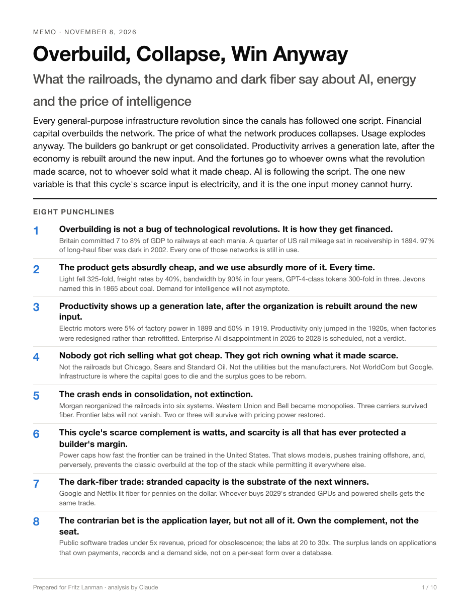

What the railroads, the dynamo and dark fiber say about AI, energy and the price of intelligence
Every general-purpose infrastructure revolution since the canals has followed one script. Financial capital overbuilds the network. The price of what it produces collapses. Usage explodes anyway. The builders go bankrupt or get consolidated. Productivity arrives a generation late. And the fortunes go to whoever owns what the revolution made scarce, not to whoever sold what it made cheap. AI is following the script. The one new variable is that this cycle's scarce input is electricity.
